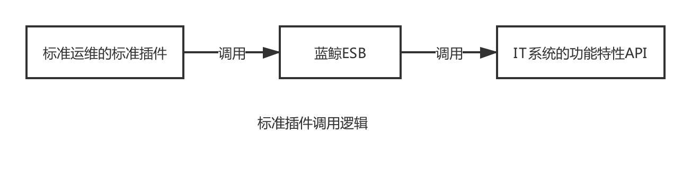
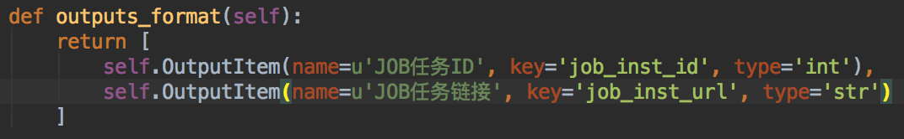
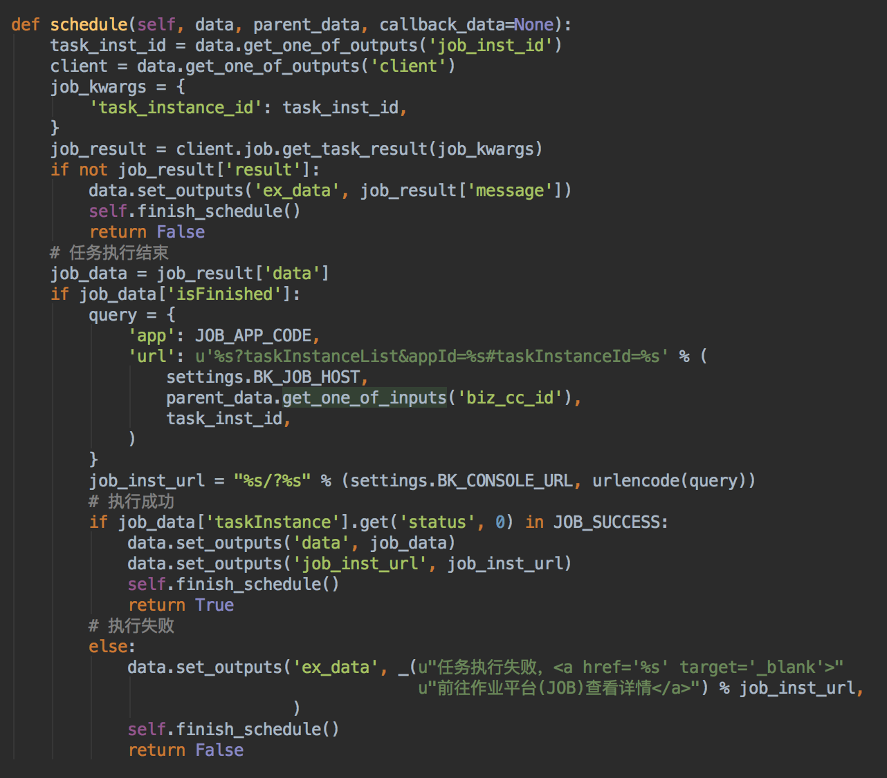

开发标准运维插件，集成内部 IT 系统
情景
标准运维内置了蓝鲸体系内作业平台、配置平台等系统的原子，但应用交付过程中还包含了部分企业内部的 ITIL 系统，例如DB变更、监控、工单，需要开发标准运维的标准插件，将应用交付过程中，使用到的能力或接口集成到标准运维中。
前提条件
- 掌握 蓝鲸 SaaS 开发，打开 腾讯运维开发实战课 马上学习
- 掌握 蓝鲸 API 网关开发
步骤
- 梳理逻辑
- 开发环境初始化
- 蓝鲸 API 网关开发
- 标准插件后台开发
- 标准插件前端开发
- 标准插件测试
1. 梳理逻辑
标准运维要调用 IT 系统的功能特性，比如执行 DB 变更或告警屏蔽，需要将对应 API 对接至蓝鲸 ESB 中，然后再开发标准运维的标准插件。
以下为标准插件的调用逻辑图。

注：建议 IT 系统的功能特性和标准运维解耦，标准运维不包含功能逻辑，仅负责转发。
2. 开发环境初始化
在开始开发之前，先把 蓝鲸 SaaS 的开发环境准备好。
然后在 标准运维项目根目录 下执行 Django-admin startapp custom_atoms ，接着新建components/collections 和 static/custom_atoms 目录。

打开conf/settings_custom.py文件，找到INSTALL_APPS_CUSTOM，加入custom_atoms。

3. 接入 ESB API
参照 蓝鲸 API 网关开发指南完成 ESB 接入，然后更新标准运维bluking/component下的文件。

4. 标准插件后台开发
在custom_atoms/components/collections目录下创建 test.py 文件，其中需要定义的属性和类如下所示。

test.py 属性详解：
__group_name__：标准插件所属分类（一般是对应 API 的系统简称，如配置平台(CC)）class TestCustomService(Service)：标准插件后台执行逻辑__need_schedule__= True：是否是异步执行，默认为 Falseinterval = StaticIntervalGenerator(5)：异步标准插件的轮询策略def execute：前端参数获取、API 参数组装、结果解析、结果输出def schedule：轮询逻辑、结果输出def outputs_format：输出参数格式化class TestCustomComponent(Component)：标准插件定义name： 标准插件名称code：唯一编码bound_service：绑定后台服务form：前端表单定义文件路径
TestCustomService 中 execute 函数详解：
- 可以是任何 Python 代码，如果对应于 ESB API 调用，一般分为参数组装、API 调用、结果解析。
data是标准插件前端数据，对应于前端的表单，可以用 get_one_of_inputs 获取某一个参数；执行完成可以使用 set_outputs 写入返回值和异常信息(ex_data)。parent_data是任务的公共参数，包括 excutor—执行者，operator—操作员，biz_cc_id—所属业务 ID。详细请查看 gcloud/taskflow3/utils.py。- 返回 True 表示标准插件执行成功，False 表示执行失败

TestCustomService 中 execute 函数详解：
- 返回列表格式。
- 列表格式的每一项定义一个返回字段，是 execute 函数中的 set_outputs 输出的字段的子集；key—输出字段标识，name—输出字段含义，type—输出字段类型（str、int 等 python 数据结构）。

TestCustomService 中 shedule 函数详解：
- 由
interval控制调用策略，如 pipeline.core.flow.activity.StaticIntervalGenerator（每隔多少秒轮询一次）、DefaultIntervalGenerator（每次轮询间隔时间是上一次的两倍）。 - 使用
self.finish_schedule结束轮询。 - 返回
True表示标准插件执行成功，False表示执行失败。

5. 标准插件前端开发
在 custom_atoms/static/custom_atoms 目录下创建 test 目录，并创建 test_custom.js 文件，注意文件路径和标准插件后台定义的 form 保持一致。通过 $.atoms 注册标准插件前端配置，其中各项含义是：
test_custom：标准插件后台定义的 code。tag_code：参数 code，请保持全局唯一，命名规范为“系统名_参数名”type：前端表单类型，可选 input、textarea、radio、checkbox、select、datetime、datatable、upload、combine 等attrs：对应 type 的属性设置，如 name、validation

6. 标准插件测试
创建流程模板，新增标准插件节点，标准插件类型选择新开发的标准插件，展示的输入参数和前端配置项一致，输出参数和后台 outputs_format 一致，其中执行结果是系统默认，值是True 或 False ，表示节点执行结果是成功还是失败。

根据上一步创建的流程模板，新建任务执行后查看结果。

如果标准插件执行出错，请先查看节点执行详情，确定是否是代码逻辑异常。

接着查看 APP 组件类型日志，确定是都是 ESB API 调用异常。

提交代码
执行 python manage.py collectstatic –noinput，然后就可以提交代码并打包发布了。
标准插件开发规范
- 分组命名规则是“系统名(系统英文缩写)”，如“作业平台(JOB)”。
- 标准插件编码(code)使用下划线方式，规则是“系统名_接口名”，如 job_execute_task。
- 后台类名使用驼峰式，规则是“标准插件编码+继承类名”，如 JobExecuteTaskService。
- 前端 JS 文件目录保持和系统名缩写一致，JS 文件名保持和标准插件编码一致。
- 参数
tag_code命名规则是“系统名_参数名”，这样可以保证全局唯一；长度不要超过 20 个字符。